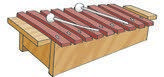

Lesson 19: Letter X
Lesson 19
Letter X

Trace, identify, or enter the letter X; explore a teacher-provided raised-line letter model before answering.
Copy the letter X using the writing lines, keyboard, or braille.
Copy Xx using the writing lines, keyboard, or braille.
Copy the following words in your exercise book.
Copy the word X-ray using the writing lines, keyboard, or braille.
X-ray
Copy the word Xylophone using the writing lines, keyboard, or braille.
Xylophone
Copy the word Box using the writing lines, keyboard, or braille.
Box
Copy the word Wax using the writing lines, keyboard, or braille.
Wax